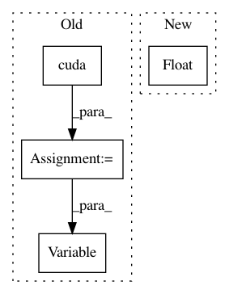

031392ff2cbb5703558d17a676a456521f754190,mnist/main.py,,train,#Any#,67
Before Change
batch_targets_t = torch.LongTensor(BATCH_SIZE)
if cuda:
batch_data_t = batch_data_t.cuda()
batch_targets_t = batch_targets_t.cuda()
batch_data = Variable(batch_data_t, requires_grad=False)
batch_targets = Variable(batch_targets_t, requires_grad=False)
for i in range(0, training_data.size(0), BATCH_SIZE):
optimizer.zero_grad()
batch_data.data[:] = training_data[i:i+BATCH_SIZE]
batch_targets.data[:] = training_labels[i:i+BATCH_SIZE]
After Change
loss = loss.data[0]
optimizer.step()
print("Train Epoch: {} [{}/{} ({:.0f}%)]\tLoss: {:.4f}"
.format(epoch, end, opt.trainSize, float(end)/opt.trainSize*100, loss))
def test(epoch):
// create buffers for mini-batch
In pattern: SUPERPATTERN
Frequency: 3
Non-data size: 4
Instances
Project Name: OpenNMT/OpenNMT-py
Commit Name: 031392ff2cbb5703558d17a676a456521f754190
Time: 2016-12-15
Author: soumith@fb.com
File Name: mnist/main.py
Class Name:
Method Name: train
Project Name: kentsommer/pytorch-value-iteration-networks
Commit Name: 2205fce8ac9f1d9f01f81996f7deef9a7b197a8d
Time: 2020-10-01
Author: 16188477+shuishida@users.noreply.github.com
File Name: test.py
Class Name:
Method Name: main